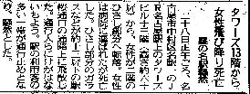

あんまりいい話題じゃないけど....
今日（1/28）、午後12時ちょうどに、名古屋駅に隣接したビルの入り口あたりでＡさんと待ち合わせした。
少し前に着いて待っていると、約束の時間にＡさんも来た。二人そろって某所に行くのだが、その前に打ち合わせをと思って、口を開き書けたトタンに、チャンチャラチャーンと賑やかな音。
なにごとかと思ったら、そのビルの入り口横にからくり時計があった。ちょうど定時なので、からくり人形が音楽に乗ってパフォーマンスを繰り広げ始めたのだった。
（なるほど）と思ったが、こっちは打ち合わせをしたいので、音楽はジャマ。仕方ないので待っていると、数分してパフォーマンスが終わった。やれやれと思いながらあらためて口を開きかけると、今度は救急車がウーウーとサイレンを鳴らしながら来た。
（なんだか今日は賑やかだな。事故でもあったのか）と思っていると、もっとハデな音を鳴らしながら消防のハシゴ車まで来た。（なんだ、なんだ）と思っていると、さらに続いてサイレンの音。見ると今度はパトカーが２，３台。
もうあたりは騒然として、話しどころではない。しかし近くに火事の様子はまったくなく、いったい何が起こっているのか判らない。そこであたりを見回すと、名古屋駅の正面玄関前あたりに黒山の人だかりができている。（いったい何が...？）と思いつつ、Ａさんとそっちへ移動し始めた。
黒山の人だかりまで50ｍほど。そこへ着く間に、消防隊員やら救急隊員が血相変えて走り回ってるのとすれ違う。黒山あたりに近づくと、警察が黄色のテープを張り巡らせている。人のスキ間からテープで確保された通路あたりを覗いてみたが、そこには別に何もない。（?_?）
（？）と思いながら、よく見ると、確保された通路の真ん中に黒いハイヒールが片方ころがっている。そしてハイヒールの周りにはガラス片が大量に散らばっている。（通り魔事件か？。それにしてもハシゴ車はなんで、来たのか）と思いながら、上を見る。
この通路は駅の１階から張り出したガラス屋根に覆われている。そのガラス屋根の一部が大きくひび割れている。そのガラス屋根の上で救急隊員や消防隊員が数人なにかしている。
その頃になって周りの人の話しから、駅ビルの上の階から若い女性が飛び降り自殺したらしいという事が分かった。その女性をガラス屋根から下へおろすために、ハシゴ車が必要だったらしい。
ようやく事情は分かったが、気の毒で見ていられない。事情が判ったところで現場を離れた。
今日の夕刊に、それに関する記事が載っていた。

＃記事には女性の身元などの続きがあるが、カットした。
|